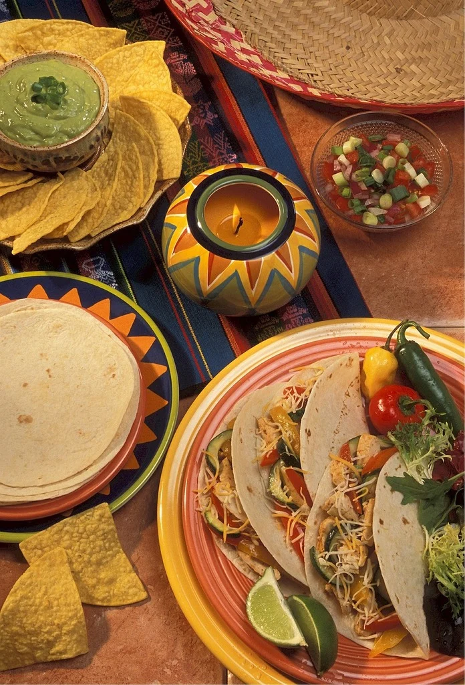

Naše Kuchyně
Speciální pokrmy
Každý talíř je oslavou tradice, připravený z nejčerstvějších surovin a vřelosti naší otevřené kuchyně.


Ručně vyráběné recepty předávané po generace —
kde každé jídlo nese teplo naší rodiny.
Každý talíř je oslavou tradice, připravený z nejčerstvějších surovin a vřelosti naší otevřené kuchyně.
Vstupte do našich dveří a nechte své smysly cestovat přímo do srdce Mexika.

Každá tortilla je ručně lisována z masa nixtamalizada — prastaré techniky, která mění sušenou kukuřici na živé, dýchající těsto. Sledujte naše kuchařky při práci v otevřené kuchyni, jak naplňují prostor vůní čerstvé kukuřice.
Čerstvé každé ráno
Každý pátek a sobotu večer náš milovaný mariachi ansámbl naplní restauraci nadčasovými písněmi lásky, touhy a oslav. Nechte se houslemi, trumpetami a guitarrónem přenést přímo na náměstí kdesi v Jalisku.
Pá & So · 19:00 – 22:00
Naše kurátorská sbírka obsahuje více než 80 prémiových tequil a mezcalů — od hedvábných blancos po stařené añejos, které se vyrovnají nejlepším koňakům. Naši experti míchají koktejly, které jsou uměním samy o sobě.
80+ Prémiových destilátůPřipojte se k nám pro nezapomenutelný večer. Vyplňte údaje a my vám rezervaci potvrdíme do 24 hodin.
Vaše rezervace byla přijata. Brzy vám pošleme potvrzení na e-mail. ¡Nos vemos pronto!